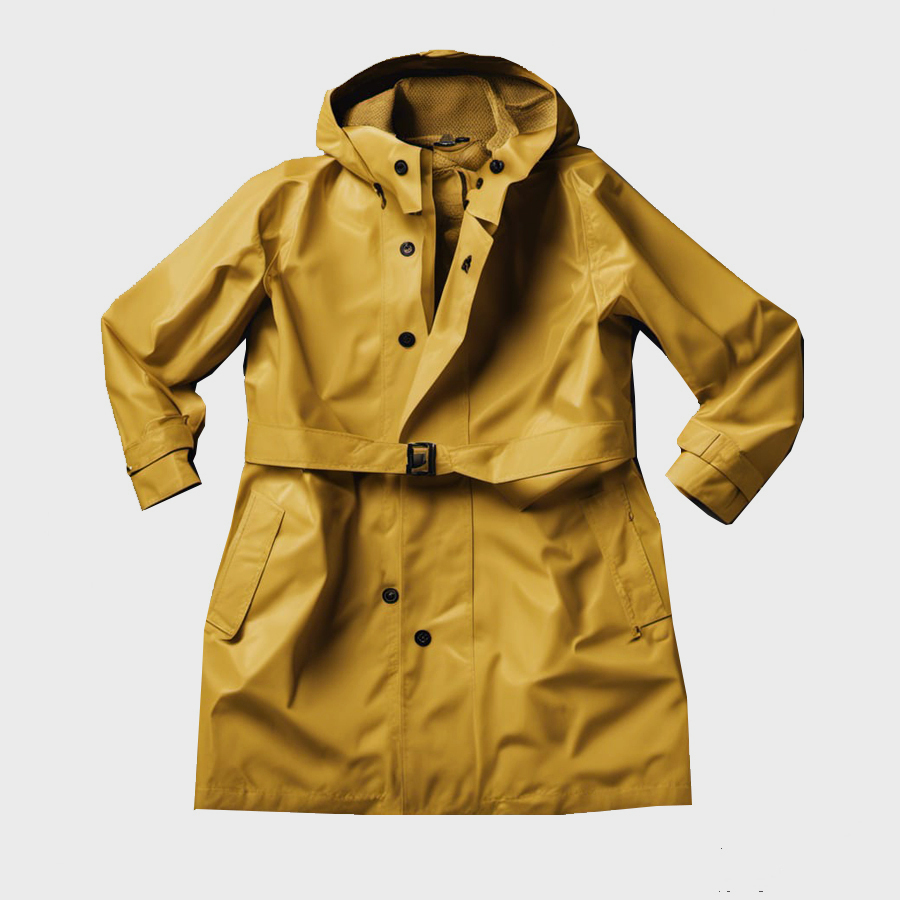

Home / Rainjackets / Classic Raincoat Women
Classic Raincoat

Mustard Yellow
$56.00
$80
Sizes:
XS
S
M
L
XL
Introducing our timeless Classic Women's Raincoat, the perfect blend of style and functionality for the modern woman. Crafted with care and attention to detail, this raincoat is designed to keep you dry and chic. Its classic silhouette, with a flattering tailored fit, ensures you'll look polished no matter the weather.
PVC-free PU material. Waterproof. Zipper and buttons. Belt around waist. Two side pockets